<!-- .slide: data-state="front hide-controls" --> <div id="title">Web Technologies</div> <div id="subtitle">Data Privacy and Security</div> <div id="date">Data Science and Management (DASMA)</div> --- <!-- .slide: data-state="break-blue hide-controls" --> # Introduction to HTTP --- ## Anatomy of a Typical Web Application <div class="content-center"> <p>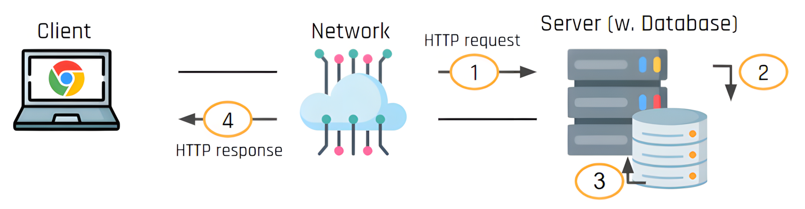</p> <br/> <div class="cell-center"> 1. The user requests a webpage through a browser 2. The web application queries the database for the user's data 3. The data from the database is used to dynamically generate page content 4. The page is rendered by the client’s browser </div> </div> --- ## Uniform Resource Locator (URL) <div class="content-center"> <div class="alert alert-note">URLs are identifiers for documents on the web</div> <br/> <p>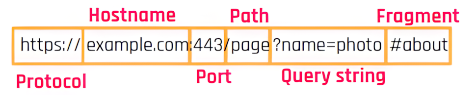</p> <br/> - Some elements are optional: port, query string, fragment - When reserved characters (like space : ? /) need to be used in the URL, they must be **URL-encoded**: - %20 = space - %2F = / - … Example of URL-encoding: https://example.com/page?name=my%20page </div> --- ## The HTTP Protocol <div class="content-center"> <div class="alert alert-note">HTTP (Hypertext Transfer Protocol) defines <b>rules and structure</b> of the communication between client and web server</div> <br/> Properties: - **Stateless**: each request is processed independently - Cookies are used to implement stateful applications on top of HTTP (more on this later) - **Not encrypted**: HTTP traffic can be read and modified by anyone on the network without the communication parties noticing it - **Default port** for HTTP is **80** </div> --- ## The HTTPS Protocol <div class="content-center"> <div class="alert alert-note">HTTPS (HTTP Secure) is the <b>secure variant</b> of HTTP.</div> <br/> Properties: - HTTP messages are transmitted over a **TLS connection**, which provides **encryption** - TLS (Transport Layer Security) is a cryptographic protocol that creates an encrypted tunnel between a client and server. - **Default port** is **443** <br/> Security properties: - **Confidentiality**: content of the traffic cannot be inspected as it travels on the network - **Integrity**: content of the traffic cannot be modified as it travels on the network - **Authentication**: the client can verify that it is communicating with the expected server </div> --- ## HTTP Request <div class="content-center"> <p>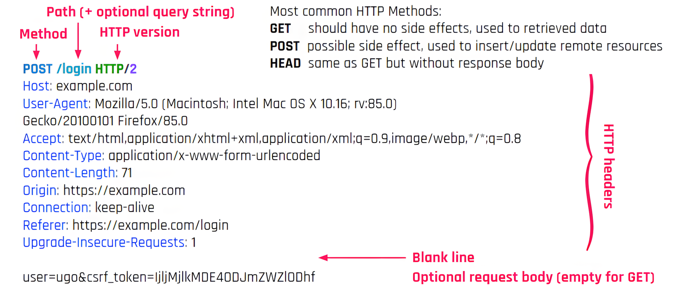</p> </div> --- ## HTTP Response <div class="content-center"> <p>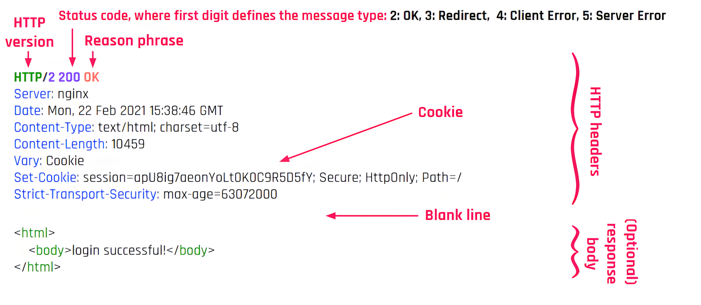</p> </div> --- ## Evolution of HTTP: 0.9 → 1.1 <div class="content-center"> **Before 1996 - HTTP/0.9** - Only supported `GET` requests - No headers, no status codes - just raw HTML in the response <br/> <div class="fragment" data-fragment-index="1"> **1996 - HTTP/1.0** - Introduced **headers**, **status codes**, and new methods (`POST`, `HEAD`) - Each request required its own TCP connection → inefficient due to repeated TCP (and TLS for HTTPS) handshakes before any data transfer <br/> </div> <div class="fragment" data-fragment-index="2"> **1997 - HTTP/1.1** - Still widely used today - **Persistent connections**: connections stay open unless explicitly closed - no more repeated handshakes - **Pipelining**: client can send multiple requests over one TCP connection without waiting for responses - **Chunked transfer encoding**: server can send content in smaller chunks before the full resource is ready → faster initial rendering - **Better caching**: only fetch a resource if it actually changed (thanks to headers like `If-Modified-Since`) </div> </div> --- ## Demo: Opening a page with Google Chrome <div class="content-center"> </div> --- ## Demo: Opening Chrome's Developers Tools <div class="content-center"> <p>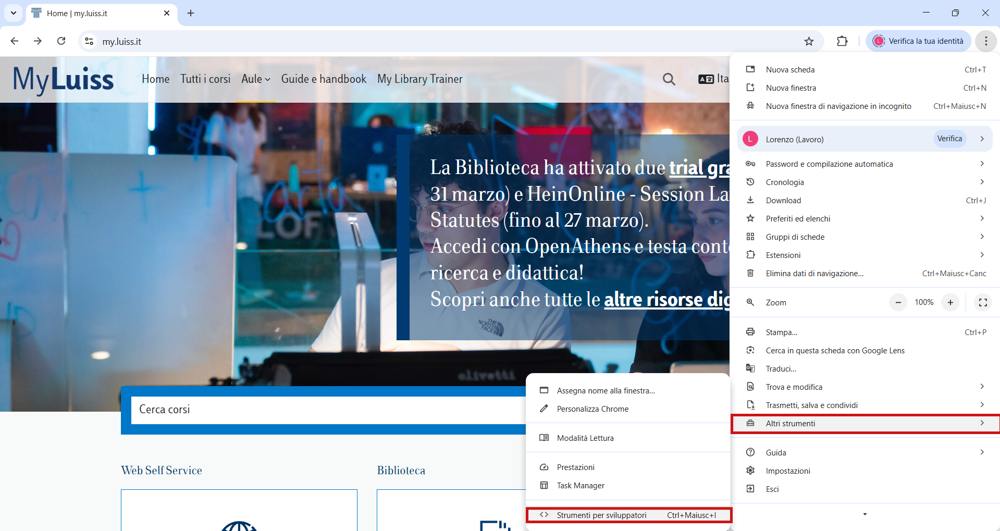</p> </div> --- ## Demo: Opening Chrome's Developers Tools <div class="content-center"> <p>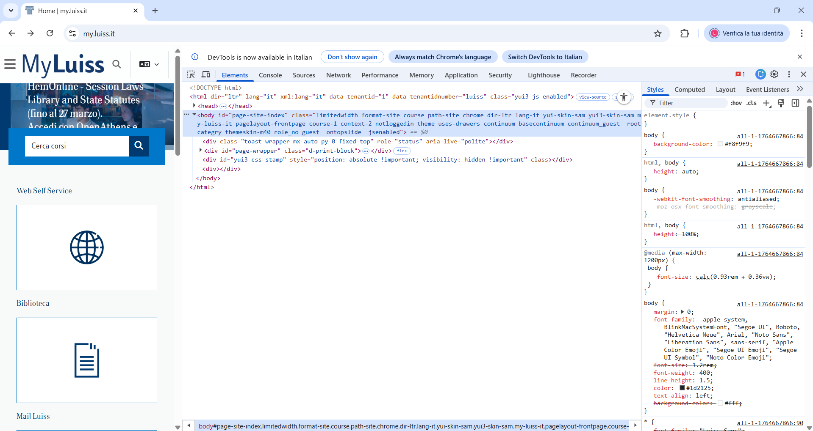</p> </div> --- ## Demo: Inspecting Network Request <div class="content-center"> <p>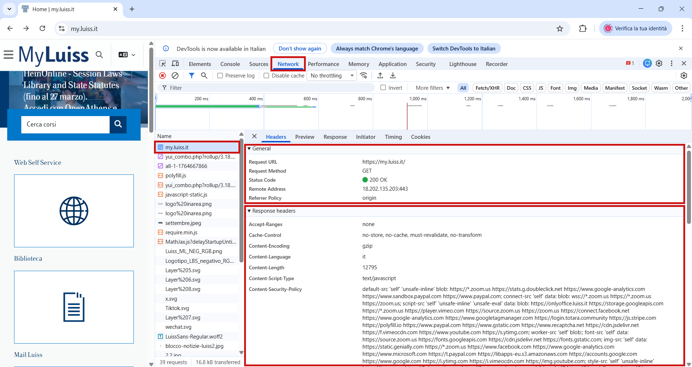</p> </div> --- ## Demo: Inspecting Network Request <div class="content-center"> <p>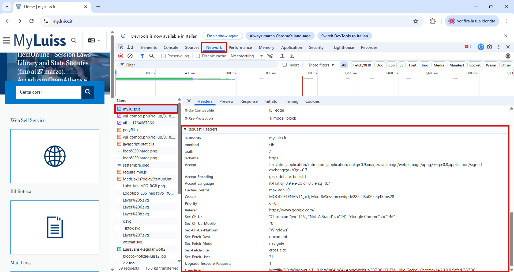</p> </div> --- ## Demo: Inspecting Cookies <div class="content-center"> <p>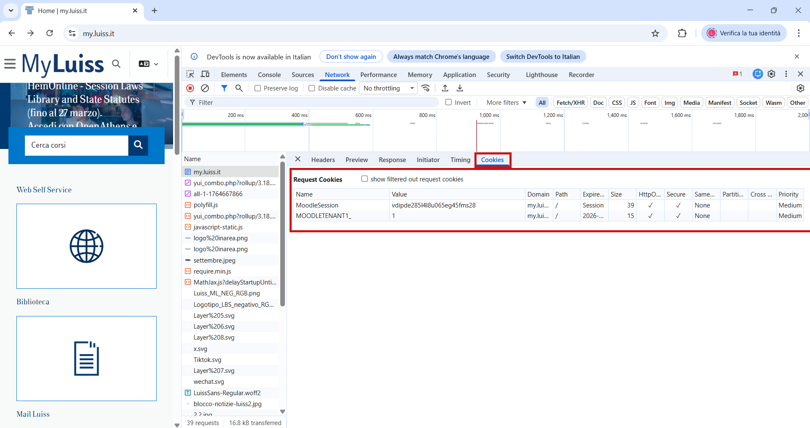</p> </div> --- ## Demo: Inspecting Cookies <div class="content-center"> <p>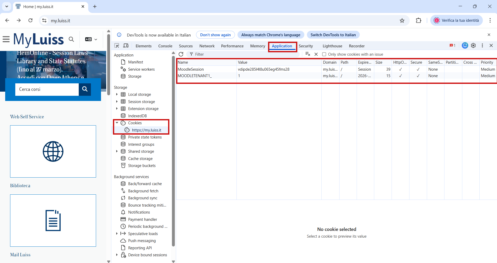</p> </div> --- ## Demo: Inspecting Page Contents <div class="content-center"> <p>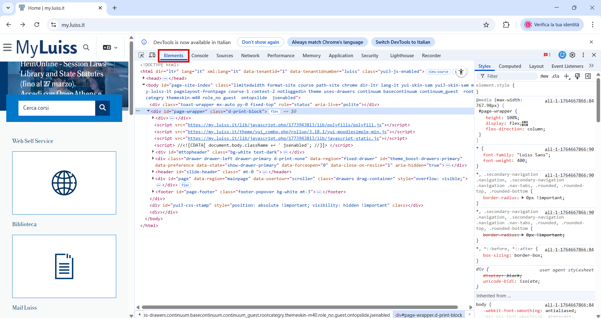</p> </div> --- ## Demo: Modifying Page Contents <div class="content-center"> <div class="alert alert-warning">Modifications are <b>local</b> to your browser.</div> <br/> <p>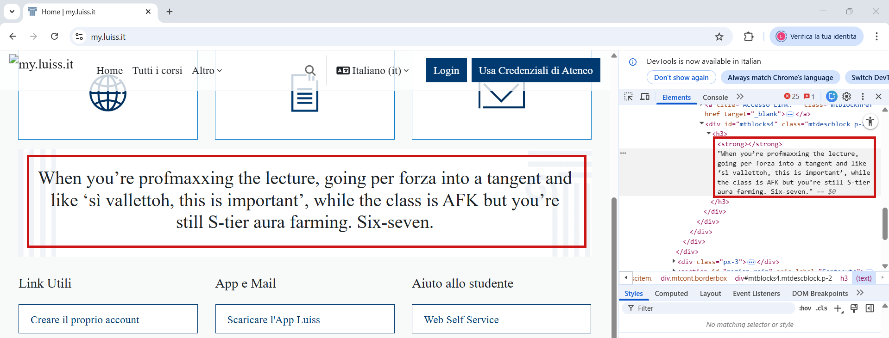</p> </div> --- ## The Languages of the Web: Client-Side <div class="content-center"> <div class="columns-container columns-center"> <div class="col"> - **HTML** <br> Defines the structure of the webpage <br> - **CSS** <br> Defines the styling of the page <br> - **JavaScript** <br> Allows adding dynamic interactive effects to the webpage (e.g., react to user interactions) </div> <div class="col"> <p>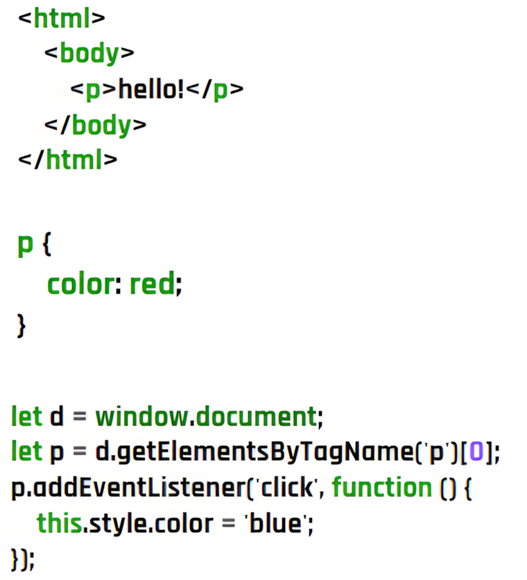</p> </div> </div> </div> --- ## The Languages of the Web: Server-Side <div class="content-center"> <div class="alert alert-note">Virtually <b>every programming language</b> can be used on the server-side (even C!)</div> <br/> Most common server-side languages in 2025: Python, Node.js (JavaScript/TypeScript), Java, Go, C#, PHP - These languages are typically used through a web framework (more on this later) <br> Server-side code handles: - Session management of users - Interaction with the database - Generation of the response pages - ... </div> --- ## Web Frameworks <div class="content-center"> <div class="alert alert-note">A web framework provides a set of tools and libraries to <b>simplify building web applications</b>.</div> <br/> Most popular server-side frameworks in 2025: Flask, Django, FastAPI (Python), Express, Next.js (JavaScript/TypeScript), Spring Boot (Java), Laravel (PHP), ASP.NET (C#) <br> A framework typically handles: - **Routing**: mapping URLs to the code that handles them - **Input handling**: parsing query strings, form data, JSON bodies - **Session management**: tracking logged-in users across requests - **Templating**: generating HTML pages dynamically <br/> <div class="fragment" data-fragment-index="1"> <div class="alert alert-hint">Frameworks often use <b>template engines</b> to <b>generate HTML pages dynamically</b> by combining a template with data.</div> </div> </div> --- ## Quick and dirty HTTP server <div class="content-center"> A quick but unsafe way of spawning an HTTP server is: <br/> ```python > python3 -m http.server 8000 Serving HTTP on 0.0.0.0 port 8000 (http://0.0.0.0:8000/) ... ``` <br/> <br/> <div class="fragment" data-fragment-index="1"> <div class="alert alert-error">No HTTPS → no encryption → traffic <b>can be intercepted</b></div> <br/> </div> <div class="fragment" data-fragment-index="2"> <div class="alert alert-error">The current working directory is the root for the web server → all its files are <b>served to whoever visits the webapp</b></div> </div> </div> --- ## PHP - Basics <div class="content-center"> <div class="alert alert-note">PHP (Hypertext Preprocessor) is a <b>server-side scripting language</b> with C-like syntax</div> <br/> Syntax basics: - **Variable names** start with $ e.g. `$name = "Alice";` - echo **prints** the value of an expression e.g. `echo "X Forza!";` - The . operator denotes **string concatenation** `echo "Hello " . $name;` <br/> PHP uses global associative arrays to **handle input and state**: - $_GET: parameters provided via the **URL query string** - $_POST: parameters provided in the **body of a request** - $_SESSION: parameters stored in a PHP **session** (preserved across multiple requests) </div> --- ## PHP - Example <div class="content-center"> <div class="alert alert-note">HTML and PHP code can be intermingled in the same file.</div> <br/> <p>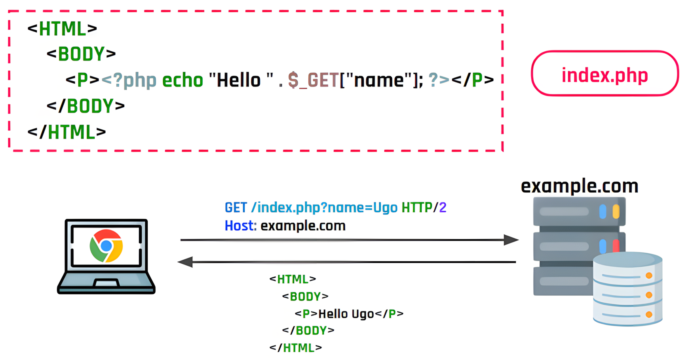</p> </div> --- ## Quick and dirty HTTP+PHP server <div class="content-center"> A quick but unsafe way of spawning a HTTP/PHP server is: <br/> <br/> <div class="alert alert-error">The current working directory is the root for the web server</div> </div> --- ## Python Web Server - Basics <div class="content-center"> <div class="alert alert-note">Python can be used as a <b>server-side language</b> through web frameworks like Flask or Django.</div> <br/> These frameworks use decorators to map URLs to functions: - `app = Flask(__name__)`: creates the Flask application instance - `@app.route("/path")`: defines which URL path triggers the function - `request.args`: parameters provided via the URL query string (like $_GET) - `request.form`: parameters provided in the body of a request (like $_POST) - `session`: dictionary storing session data (like $_SESSION) </div> --- ## Quick and dirty HTTP/Python server <div class="content-center"> <p>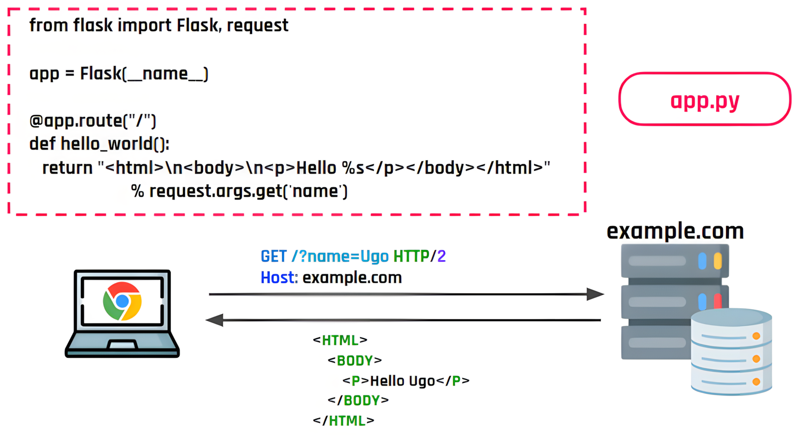</p> </div> --- ## Quick and dirty HTTP/Python server <div class="content-center"> <p>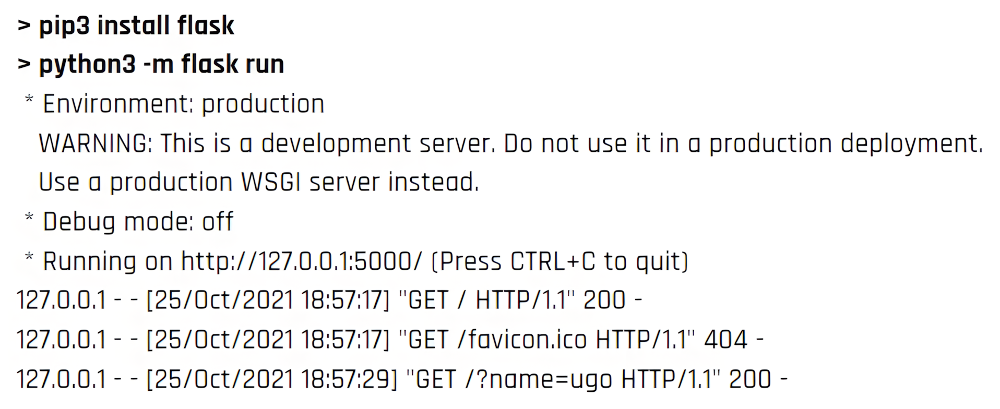</p> </div> --- ## How to make our server reachable from the internet? <div class="content-center"> <div class="alert alert-warning">The HTTP servers we have seen so far (Python, PHP) <b>only listen on your local machine</b> (not from the internet).</div> <br/> <br/> <div class="fragment" data-fragment-index="0"> <div class="alert alert-note"><a href="https://ngrok.com/">ngrok</a> is a <b>tunneling tool</b> that solves this by creating a public URL that forwards traffic to your local server.</div> <br/> - no port forwarding or domain name required - supports HTTPS out of the box - free tier assigns random URLs that change on each restart - bandwidth and connection limits apply, making it suitable for temporary use (testing, demos, CTFs), not production </div> </div> --- ## ngrok howto <div class="content-center"> 1. Spawn your local HTTP server on port X e.g. `python3 -m http.server 8080` <br> 2. Download and install ngrok from https://ngrok.com/ <br> 3. Register an account on ngrok.com and get the authtoken <br> 4. Configure the authtoken: <br/> <p>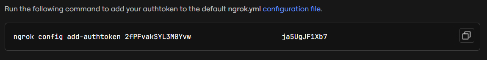</p> </div> --- ## ngrok howto <div class="content-center"> 5. Expose your local HTTP server with ngrok e.g. `ngrok http 8080` <br/> <p>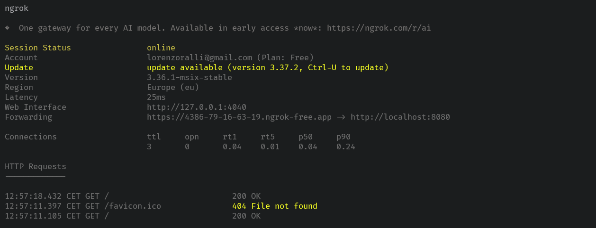</p> </div> --- ## ngrok <div class="content-center"> 6. Get statistics from the ngrok web interface (usually located at 127.0.0.1:4040) <br/> <p>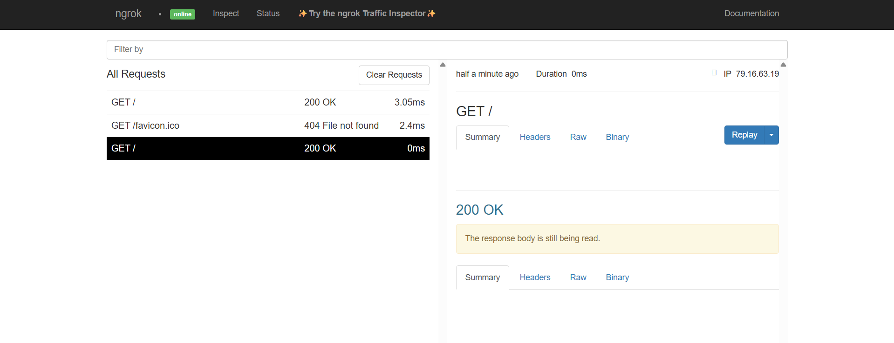</p> </div> --- <!-- .slide: data-state="break-blue hide-controls" --> # HttpPingPong <div class="content-center"> Web Challenge 01 </div> --- ## HttpPingPong - Reconnaissance <div class="content-center"> <p>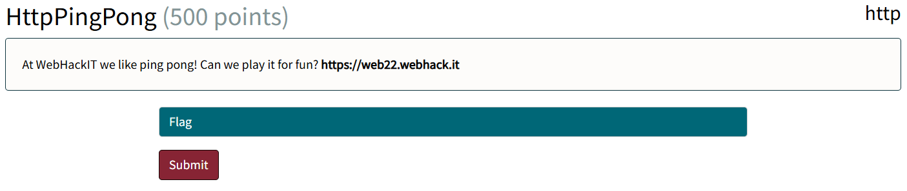</p> <br/> <br/> What can we observe? The challenge... - presents a key and expects you to host it at a reachable URL; - fetches your provided URL to check that the key string is present in the response. </div> --- <!-- .slide: data-state="break-blue hide-controls" --> # Modern Web Applications --- ## Web Applications: old but still common approach <div class="content-center"> <div class="alert alert-note">The server <b>generates the full dynamic HTML page</b> for every request; the browser simply displays it.</div> <br/> <p>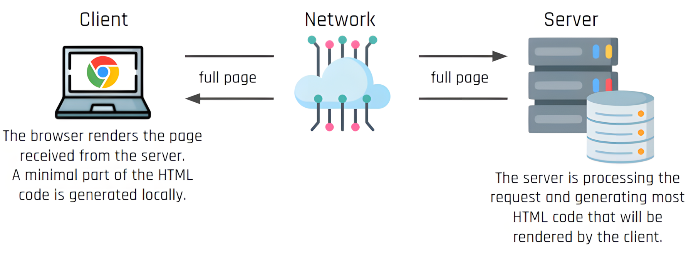</p> </div> --- ## Web Applications: old but still common approach <div class="content-center"> <div class="alert alert-note"><b>Server-side frameworks and template engines</b> are used to generate the full page before sending it to the client.</div> <br/> <p>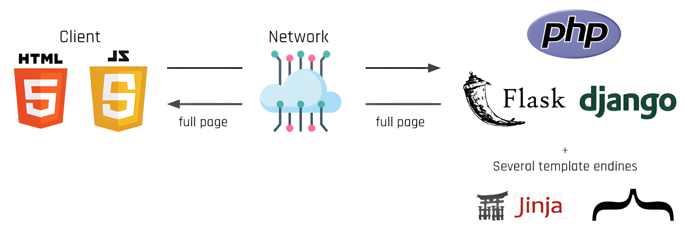</p> </div> --- ## Web Applications: old but still common approach <div class="content-center"> Pros: - the browser is doing **little work** (it is mainly a “viewer”) - **simple logic**: most things are done by the server - **easier to secure**: little logic on the client → reduced attack surface <br/> <div class="fragment" data-fragment-index="1"> Cons: - **slower user experience**: every interaction requires a full page reload from the server - **higher bandwidth usage**: the entire page is re-sent even if only a small part changed - **decoupling**: what if want to support a mobile app that has its own way of rendering the content? </div> </div> --- ## Web Applications: modern approach <div class="content-center"> <div class="alert alert-note">The server <b>only sends data</b> via a REST APIs; the browser dynamically builds the page itself using client-side code.</div> <br/> <p>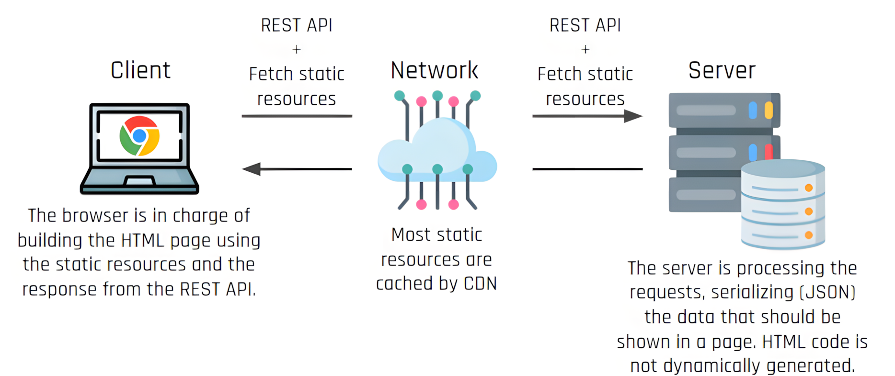</p> </div> --- ## Web Applications: modern approach <div class="content-center"> <div class="alert alert-note"><b>Client-side frameworks</b> handle rendering, while server-side frameworks expose REST APIs.</div> <br/> <p>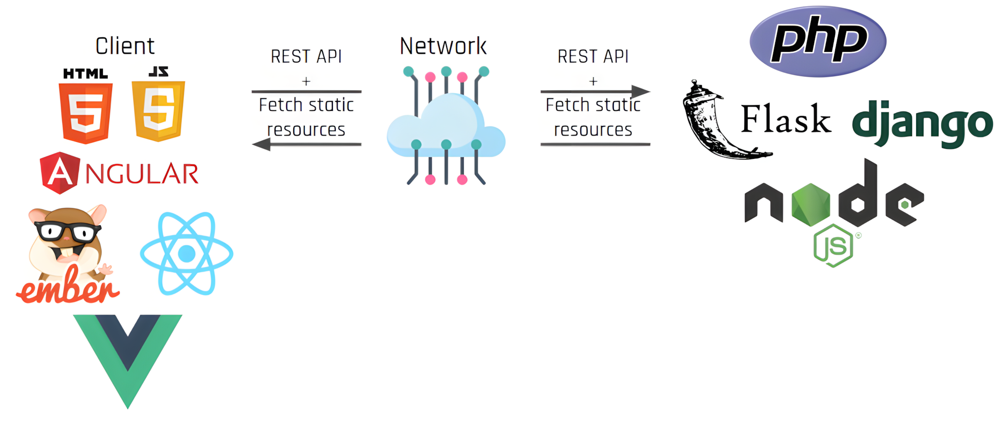</p> </div> --- ## Web Applications: modern approach <div class="content-center"> Pros: - **lighter server load**: it only serves static files and API responses - **clear separation** between frontend and backend, making it easier to support other client platforms (e.g., mobile browsers) - **no full page reloads** on each interaction - faster and smoother user experience <br/> <div class="fragment" data-fragment-index="1"> Cons: - **extremely advanced** client frameworks - **wider** client-side **attack surface** </div> </div> --- ## Web Applications: SPA <div class="content-center"> Modern client frameworks follow the **Single-Page Application** (SPA) paradigm: - A single HTML page handles all interactions - User actions trigger REST API requests; the response data is used to update page content dynamically - No full page reload needed - **only the affected parts of the page are re-rendered** <br/> <div class="fragment" data-fragment-index="1"> A REST API (Representational State Transfer) is an **interface that allows the client to request and manipulate data** on the server using standard HTTP methods. - Data is typically exchanged in **JSON format** - URLs identify resources (e.g., /api/users/42 refers to user with ID 42) </div> </div> --- ## Web Applications: WebSocket <div class="content-center"> <div class="alert alert-note">Modern web apps often need <b>real-time, bidirectional communication</b>; WebSocket provides this over a single long-lived TCP connection.</div> <br/> ```javascript const socket = new WebSocket('ws://example.com:1234/updates'); // Fired when a connection with a WebSocket is opened, socket.onopen = function () { setInterval(function() { if (socket.bufferedAmount == 0) socket.send(getUpdateData()); }, 50); }; // Fired when data is received through a WebSocket, socket.onmessage = function(event) { handleUpdateData(event.data); }; ``` </div> --- <!-- .slide: data-state="break-blue hide-controls" --> # HTTP/2 and HTTP/3 --- ## HTTP/2: basics <div class="content-center"> <div class="alert alert-note">Major revision of the HTTP protocol, derived from Google's experimental SPDY protocol (RFC 7540).</div> <br/> <br/> Main goals: - **Decrease latency** and **improve page load** speed through: - Header compression - compresses headers and uses past headers to shrink future ones - Stream prioritization - devs can assign importance to assets → critical resources are sent first - Connection multiplexing - can have multiple streams over a single TCP connection - Server Push - server can send resources before the client requests them - Fixes head-of-line blocking at the HTTP level (but not at TCP level) - Provide a negotiation mechanism to select between HTTP/1.1, HTTP/2, or other protocols - **Backward compatible** with HTTP/1.1 (same semantics, methods, status codes) </div> --- ## Head-of-line blocking problem in HTTP 1.x <div class="content-center"> Sending multiple HTTP requests efficiently has always been a challenge... - In HTTP/1.0, each request requires a separate TCP connection (expensive due to handshake overhead). - In HTTP/1.1, pipelining allows sending multiple requests on the same connection, but responses must arrive in order. <br/> Problem: - If request A is slow, request B's response **is blocked behind it** - even if it's already ready! - This made pipelining so unreliable that modern browsers disable it, resorting to workarounds: - Multiple parallel TCP connections (typically 6 per domain) - Bundling/concatenating assets to reduce the number of requests <br/> <div class="fragment" data-fragment-index="1"> <div class="alert alert-warning">This wastes resources and still doesn't fully solve the problem, which motivated HTTP/2's <b>multiplexing approach</b></div> </div> </div> --- ## HTTP/2: key ideas <div class="content-center"> HTTP/2 keeps the **same semantics as HTTP/1.1** (methods, status codes, headers) but **changes how data is transported**: <br/> - The client can request an upgrade of the connection using the **HTTP/1.1 Request Header**; If the server speaks HTTP/2, it sends a "101 Switching" status and from then on speaks HTTP/2 on that connection. <br> - HTTP/2 is a binary protocol (vs text-based HTTP/1.x); No changes needed for web applications - handled entirely by browser and server. <br> - Binary framing enables efficient multiplexing within a single connection by **splitting messages** into small, independent frames that **can be interleaved and reassembled on the other end**: - **Frame**: smallest unit of communication, each with a header identifying its stream - **Message**: sequence of frames forming a complete request or response - **Stream**: bidirectional flow within the connection, carrying one or more messages </div> --- ## HTTP/2: request and response multiplexing <div class="content-center"> <div class="alert alert-note">Multiple requests and responses are interleaved as frames over a single TCP connection, <b>eliminating head-of-line blocking at the HTTP level</b>.</div> <br/> <p>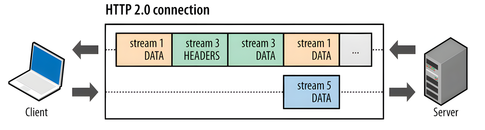</p> </div> --- ## HTTP/3 and QUIC <div class="content-center"> <div class="alert alert-error">HTTP/2 solved head-of-line (HOL) blocking at the HTTP level, but the problem <b>still exists at the TCP level</b>:</div> - A single lost packet stalls delivery of everything behind it - even frames from unrelated streams <br/> <div class="fragment" data-fragment-index="0"> <div class="alert alert-note">HTTP/3 is a major revision of HTTP, introduced to <b>solve TCP-level HOL blocking and reduce latency</b>.</div> <br/> HTTP/3 is based on **QUIC**, a general-purpose transport protocol designed by Google, which comes with two main features: - **UDP instead of TCP**: reduces protocol overhead, and a lost packet only affects its own stream, solving HOL blocking at the transport level - **TLS built into the handshake**: QUIC combines transport and encryption setup into a single step - First connection: 1 round trip (vs 2–3 for TCP + TLS in HTTP/2) - Returning client: 0 round trips - cached crypto info allows sending data immediately </div> </div> --- ## HTTP versions in the wild <div class="content-center"> <div class="columns-container columns-center"> <div class="col"> - **HTTP/1.1**: still widely used, especially for simple websites and legacy systems <br> - **HTTP/2**: dominant protocol - handles over 60% of web traffic <br> - **HTTP/3**: growing adoption, led by major providers like Google and Cloudflare </div> <div class="col"> <p>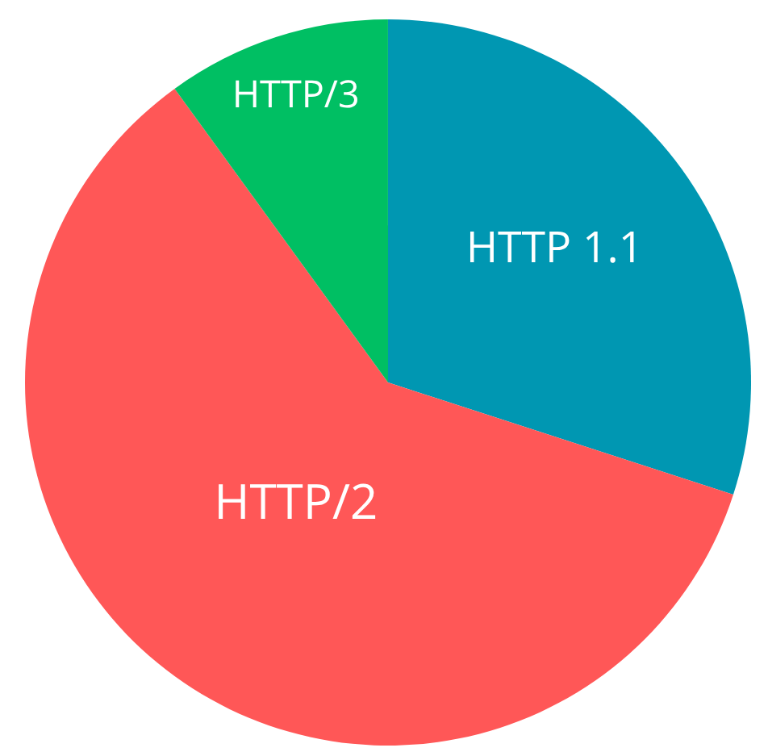</p> </div> </div> </div> --- <!-- .slide: data-state="break-blue hide-controls" --> # Document Object Model (DOM) --- ## Document Object Model (DOM) <div class="content-center"> <div class="columns-container columns-center"> <div class="col"> The DOM is a cross-platform and language-independent **interface** that treats an XML or HTML document as a **tree structure**. - Each node is an object representing a part of the document. - The browser builds the DOM when it loads a page. - JavaScript can then read and modify the tree, changing content, adding or removing elements, and updating styles - **all without reloading the page**. </div> <div class="col"> <p>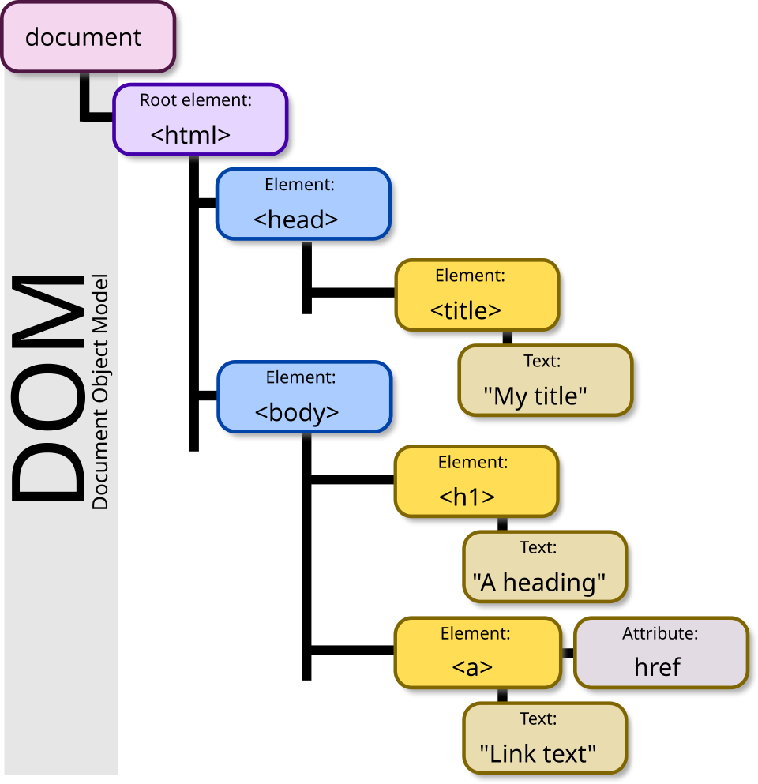</p> </div> </div> </div> --- ## HTML DOM in practice <div class="content-center"> <p>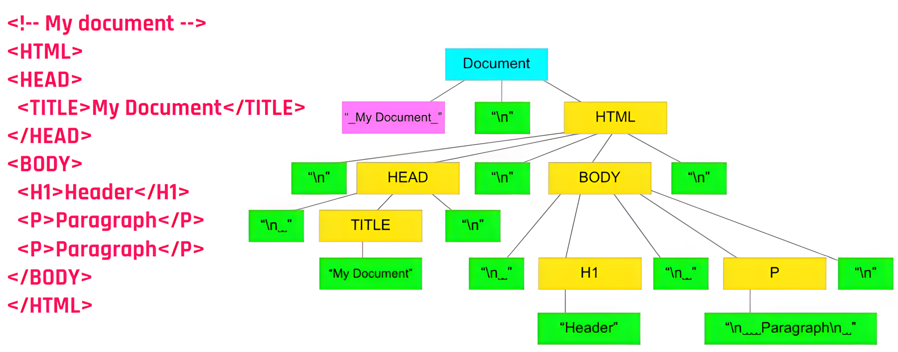</p> </div> --- ## HTML DOM in practice <div class="content-center"> Javascript (client-side): <br/> <div class="columns-container columns-top"> <div class="col"> Elements can be **retrieved** with: - `document.getElementById(id)` - `document.getElementsByTagName(name)` - `document.getElementsByClassName(name)`. <br/> </div> <div class="col"> Given an element, it can be **modified** using - `element.innerHTML` (element content), - `element.<attribute>` (modify an attribute), - `element.style.<property>` (modify a CSS property). <br/> </div> </div> Example: <p>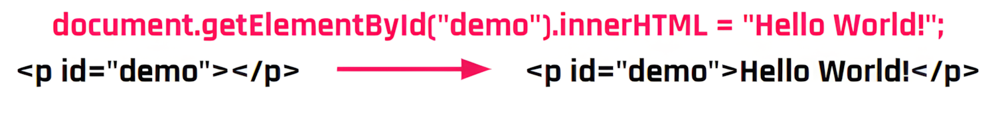</p> </div> --- ## HTML DOM in practice <div class="content-center"> Given an element, we can **modify its subtree** with: - `element.appendChild(element2)` - `element.replaceChild(old, new)` - `element.removeChild(element2)` <br> We can **create** a new element with `document.createElement(<tagname>)` <br> Additional details and example can be found **[here](https://www.w3schools.com/js/js_htmldom.asp)**. </div> --- <!-- .slide: data-state="break-blue hide-controls" --> # Web Authentication --- ## HTTP Basic Authentication <div class="content-center"> <div class="alert alert-note">HTTP defines with RFC 7617 an <b>HTTP transaction for basic authentication</b>:</div> <br/> - The client requests a page, e.g.: <br> `GET / HTTP/1.1` <br> - The server replies with: <br> `HTTP/1.1 401 Unauthorized` <br> `WWW-Authenticate: Basic realm=<name-realm>` <br> - The client gets the username/password from the user with, e.g., a popup and sends: <br> `GET / HTTP/1.1` <br> `Authorization: Basic <BASE64(username:password)>` </div> --- ## HTTP Digest Authentication <div class="content-center"> <div class="alert alert-note">HTTP defines with RFC 7616 an <b>HTTP transaction for digest authentication</b>:</div> <br/> - The client requests a page, e.g.: <br> `GET / HTTP/1.1` <br> - The server replies with: <br> `HTTP/1.1 401 Unauthorized` <br> `WWW-Authenticate: Digest realm=<name-realm> nonce=<nonce> opaque=<opaque> algorithm=<algorithm> qop=auth` <br> `algorithm` is a **cryptographically secure hash function** (default: MD5) </div> --- ## HTTP Digest Authentication <div class="content-center"> <div class="alert alert-note">HTTP defines with RFC 7616 an <b>HTTP transaction for digest authentication</b>:</div> <br/> - The client gets the username/password from the user with, e.g., a popup and sends: <br> `GET / HTTP/1.1` <br> `Authorization: Digest realm=<name-realm> nonce=<nonce> user=<user> opaque=<opaque> response=<digest> nc=<counter> cnonce=<cnonce>` <br> where `digest = HASH(HASH(<username>:<name-realm>:<passwd>):<nonce>:<counter>:<cnonce>:auth:HASH(GET:/))` </div> --- ## Basic vs Digest Authentication <div class="content-center"> <div class="columns-container columns-top"> <div class="col"> <div class="alert alert-recall">Basic</div> <br/> - Sends Base64(username:password) - Password is exposed (Base64 is reversible) - No replay protection - Only safe over HTTPS </div> <div class="col"> <div class="alert alert-recall">Digest</div> <br/> - Sends a hash including nonce, cnonce, counter - Password is never sent - Replay protection via server nonce + counter - Safer, but relies on MD5 by default </div> </div> </div> --- ## OAuth and Single Sign On (SSO) <div class="content-center"> <div class="alert alert-note">The user <b>delegates authentication</b> to a trusted Identity Provider (Google, Facebook, etc.) instead of sharing credentials with every service.</div> <br/> <br/> <div class="columns-container columns-center"> <div class="col"> A. Client requests authorization from the Resource Server <br> B. Resource Server sends back an authorization grant <br> C. Client sends the grant to the IdP, requesting an access token <br> D. IdP issues the access token <br> E. Client requests the protected resource, attaching the token <br> F. Server validates token with IdP, returns resource </div> <div class="col"> <p>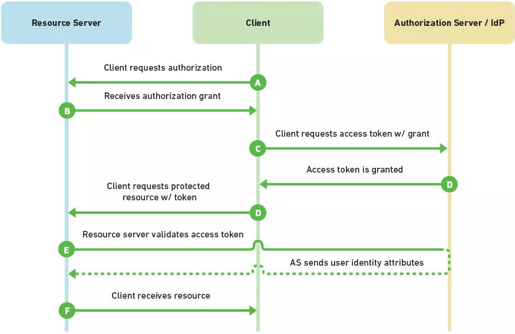</p> </div> </div> </div> --- <!-- .slide: data-state="break-blue hide-controls" --> # Cookies --- ## HTTP(S) Sessions <div class="content-center"> <div class="columns-container columns-center"> <div class="col"> HTTP(S) is a stateless protocol... - requests are **independent** from each other; - the server has no built-in way to remember who the client is between requests. <br> Session concept - Session data is stored on the server with a unique **session ID**; - Client attaches the session ID to each request. <br/> <div class="alert alert-error">if session tokens are not properly protected, an attacker can steal/guess them to impersonate users (<b>session hijacking</b>).</div> </div> <div class="col"> <p>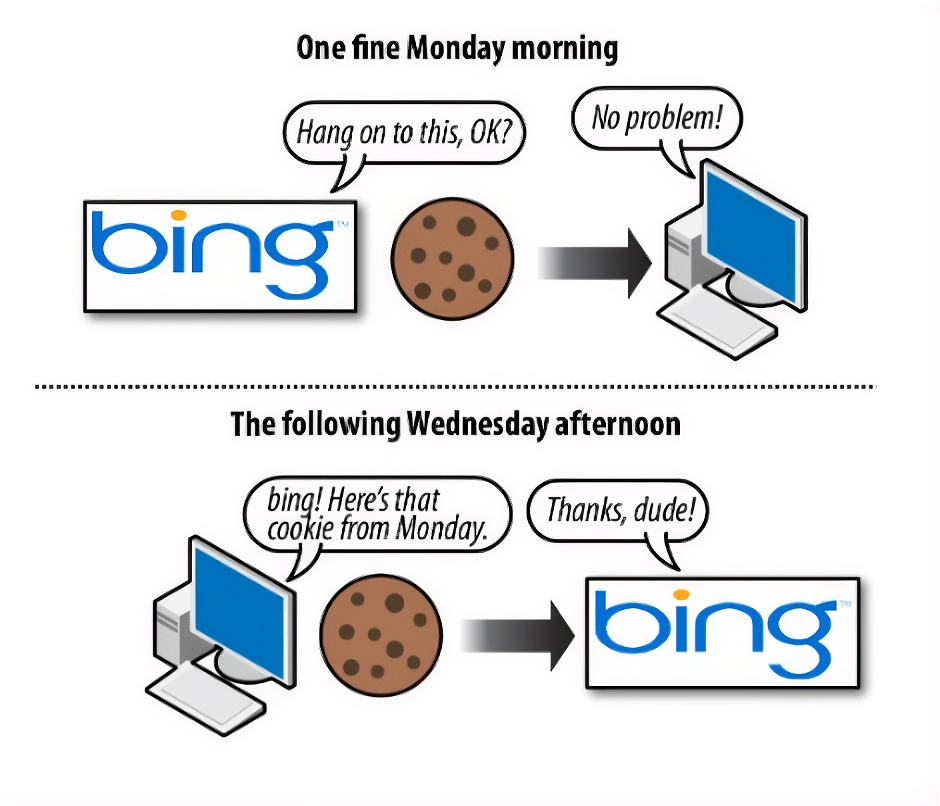</p> </div> </div> </div> --- ## Storing Info in Browser with Cookies <div class="content-center"> Sessions are typically **implemented on top of cookies** - Cookies set by websites are **automatically attached by the browser** to subsequent requests to the same website, making it a natural mechanism for carrying the session ID. - A cookie is identified by the triplet **(name, domain, path)** - Cookie attributes (e.g., Domain, Path, Secure, HttpOnly) can be used to customize the cookie behavior <br/> <p>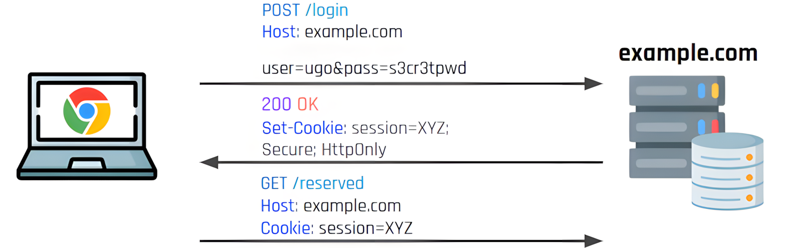</p> </div> --- ## Cookies in practice <div class="content-center"> **Setting** a new cookie (client-side with Javascript): <br/> ```python document.cookie = "username=John Doe; expires=Thu, 18 Dec 2013 12:00:00 UTC; path=/"; ``` <br/> where: - `username` is the key (string) - `John Doe` is the value (string) associated with the key - `Thu, 18 Dec 2013 12:00:00 UTC` is the expiration date. - When missing, the cookie expires at the end of the session - `path=/` is the path the cookie belongs to. - By default, the cookie belongs to the current page. </div> --- ## Cookies in practice <div class="content-center"> - **Read** all cookies: <br/> ```python let x = document.cookie; ``` <br/> <br/> - **Delete** a cookie: <br/> ```python document.cookie = "username=; expires=Thu, 01 Jan 1970 00:00:00 UTC; path=/;"; ``` <br/> …you just set the expiration date to a past date. </div> --- ## Cookies in practice <div class="content-center"> Handling cookies in PHP (server side): <br/> ```python #Set a cookie setcookie("user", "John Doe", time() + (86400 * 30), "/"); #Get the value for the cookie echo $_COOKIE["user"]; #Delete the cookie setcookie("user", "", time() - 3600); ``` </div> --- ## What are Cookies used for? <div class="content-center"> <div class="columns-container columns-center"> <div class="col"> **Authentication** <br> The cookie proves that the client previously authenticated correctly. <br> **Personalization** <br> Helps the website recognize the user from a previous visit. <br> **Tracking** <br> - Follow the user from site to site; - Learn browsing behavior, preferences, and so on. </div> <div class="col"> </div> </div> </div> --- ## Third-party cookies <div class="content-center"> A page can host contents (ads, scripts, images) coming from other domains... - cookies that are sent by these servers are named **third-party cookies** - because the same third-party domain can be embedded across many websites, it can **track a user's browsing activity across all of them** and build a detailed profile - typically for targeted advertising. <br/> <br/> <div class="fragment" data-fragment-index="0"> <div class="alert alert-error">Third-party cookies represent a <b>huge privacy concern</b></div> <br/> - Several countries have issued laws on the topic; - UE has regulated this matter through the ePrivacy Directive (often called "**Cookie Law**") which requires websites to obtain user consent before setting non-essential cookies... - this is why you see those "cookie banners" on almost every website. </div> </div> --- <!-- .slide: data-state="break-blue hide-controls" --> # Storage --- ## Web Storage (or DOM Storage) <div class="content-center"> <div class="alert alert-note">Modern browsers allow a web application to store (key, value) pairs on the client:</div> - **Session Storage**: kept only for the current session (cleared when the browser is closed) - **Local Storage**: persistent across sessions (saved to disk) <br> Properties: - the key and value can only be strings - the maximum size for the whole storage is typically 5MB (varies by browser) - the storage is **NOT encrypted**: e.g., Firefox uses a SQLite file. </div> --- ## Cookie vs Web Storage <div class="content-center"> <div class="columns-container columns-top"> <div class="col"> <div class="alert alert-recall">Cookie</div> <br/> - Server-oriented (sent with every request) - 4KB max. size - Undefined concurrency across tabs - Old APIs, some security risks - Built-in expiration </div> <div class="col"> <div class="alert alert-recall">Web Storage</div> <br/> - Client-only (server has no direct access) - 5MB max size (may vary) - Concurrency handled internally by the browser - Newer APIs, (should be) safer - No native expiration </div> </div> </div> --- ## Common use cases for Client-Side Storage <div class="content-center"> - **Cookies** <br> - Authentication and session management: When you log in, the server sends back a session ID as a cookie, and the browser includes it in every subsequent request so the server knows who you are. - Tracking and analytics across sites. <br> - **Session Storage** <br> Temporary, tab-specific state e.g., preserving a half-filled form so you don't lose your input if you accidentally refresh the page (once you close the tab, it's gone). <br> - **Local Storage** <br> Persistent preferences and cached data e.g., remembering dark mode, saving a shopping cart across visits, or storing data locally so the app loads faster without asking the server again. </div> --- ## Web Storage in practice <div class="content-center"> Javascript (client-side): <br/> ```javascript // store a value localStorage.setItem("lastname", "Smith"); // retrieve a value console.log(localStorage.getItem("lastname")); // delete a value localStorage.removeItem("lastname"); ``` <br/> Same API for sessionStorage. </div> --- <!-- .slide: data-state="break-blue hide-controls" --> # BurpSuite --- ## BurpSuite by PortSwigger <div class="content-center"> <br/> - Platform for performing security testing of web applications - Written in Java. Proprietary and closed source :( - Luckily, there is a (free) community edition for Linux, Windows, and Mac OS X [DOWNLOAD] - Several functionalities: - HTTP(S) Interceptor - HTTP(S) repeater - Request comparer </div> --- <div class="content-center"> <div class="alert alert-note"><b>NOTE</b>: There is no magic behind this tool. hence you can do the same things with other (100% open source) tools. however, this tool can be valuable at the beginning when you are just starting learning about the web.</div> </div> --- ## Another valuable resource from the same company... <div class="content-center"> <br/> <br/> <div class="cell-center"> It nicely covers the topics that we will see in the upcoming lectures. The labs may help you prepare for the CTF. </div> </div> <div class="footnotes"> <sup>*</sup> https://portswigger.net/web-security </div> --- <div class="content-center"> </div> --- <div class="content-center"> <div class="cell-center"> <p>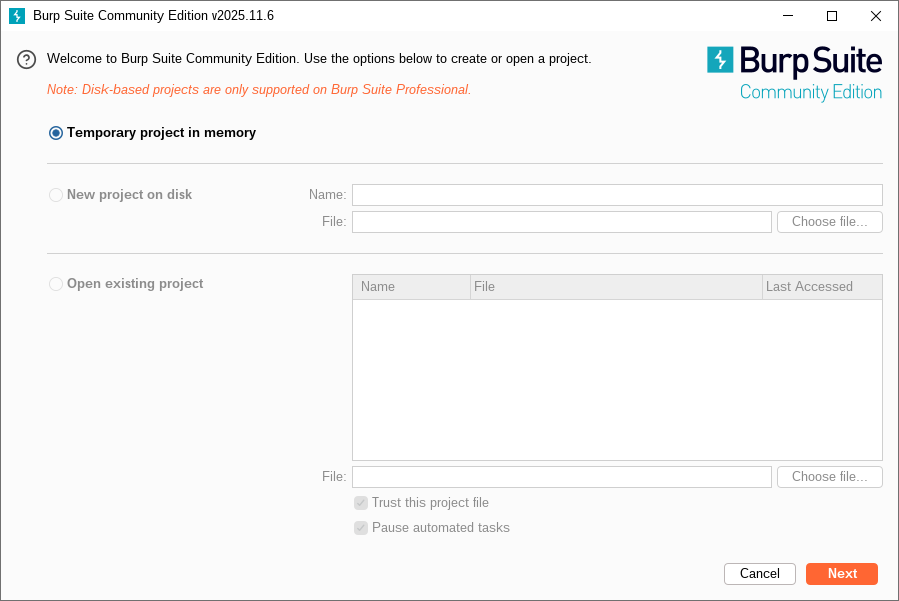</p> <br> A temporary project is fine for our goals </div> </div> --- <div class="content-center"> <div class="cell-center"> <p>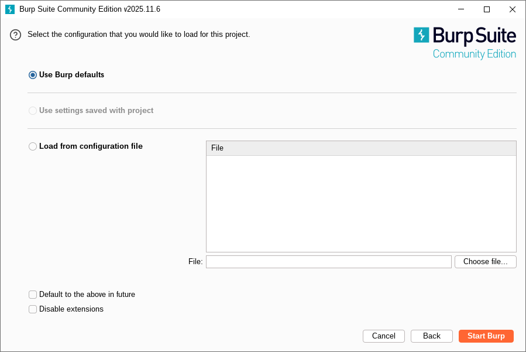</p> <br> Default settings are fine for our goals. </div> </div> --- <div class="content-center"> <div class="cell-center"> <p>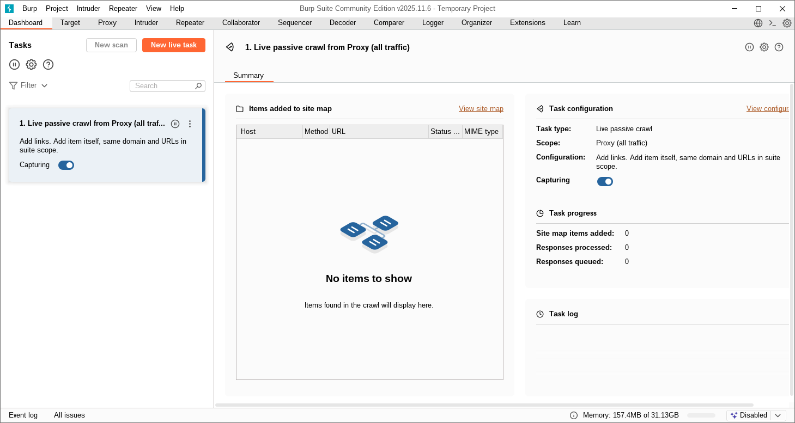</p> <br> Dashboard... Use the tabs to switch to specific functionalities </div> </div> --- <div class="content-center"> <div class="cell-center"> Tab: **Proxy** > **Intercept** <p>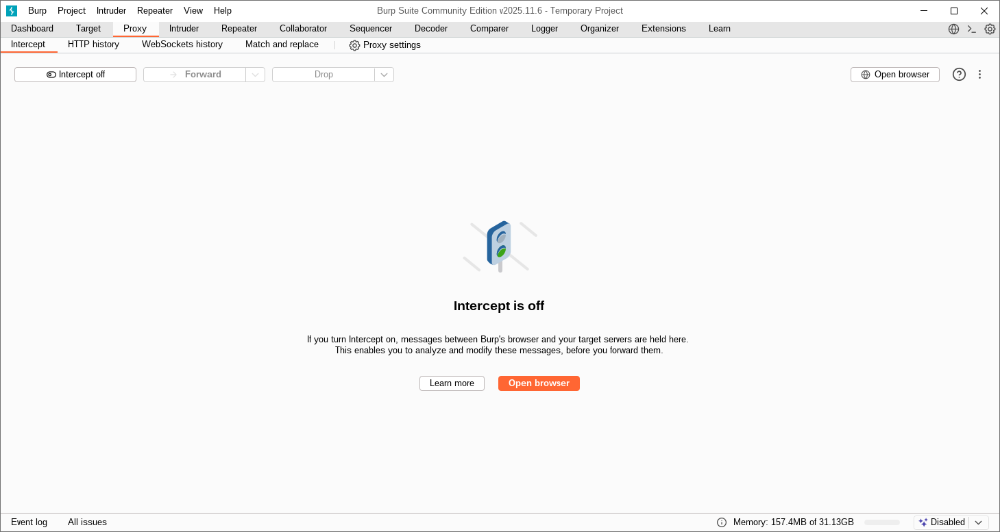</p> <br> Use Open Browser to launch the embedded browser </div> </div> --- <div class="content-center"> <div class="cell-center"> <br> The embedded browser is based on Chromium. This a (clean) browser: use it for the challenges. </div> </div> --- <div class="content-center"> <div class="cell-center"> <p>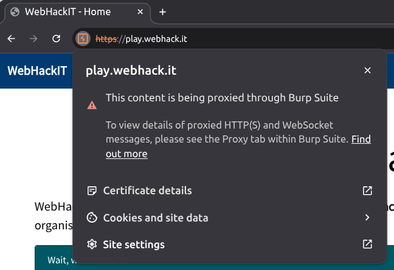</p> <br> Burp Suite is messing up with the certificates! This is done to correctly intercept our HTTPS traffic. </div> </div> --- <div class="content-center"> <div class="cell-center"> Tab: **Proxy** > **HTTP History** <p>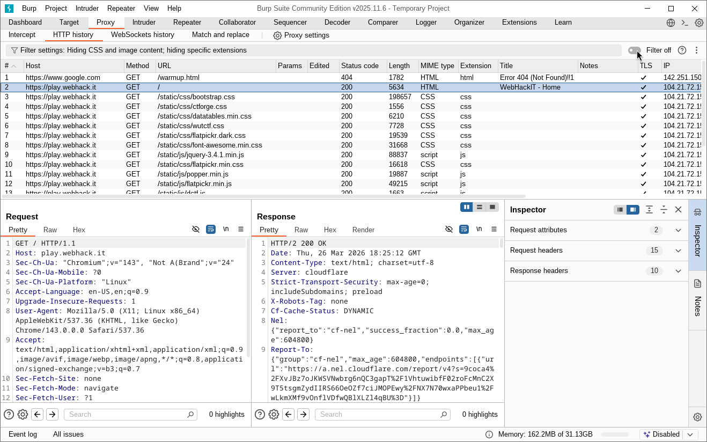</p> <br> We get a history of all network requests. We can easily inspect them... </div> </div> --- <div class="content-center"> <div class="cell-center"> <p>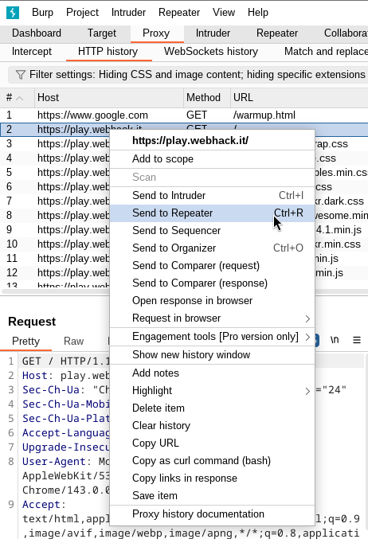</p> <br> If we want to repeat a request, then can use ***Send to Repeater*** </div> </div> --- <div class="content-center"> <div class="cell-center"> Tab: **Repeater** <p>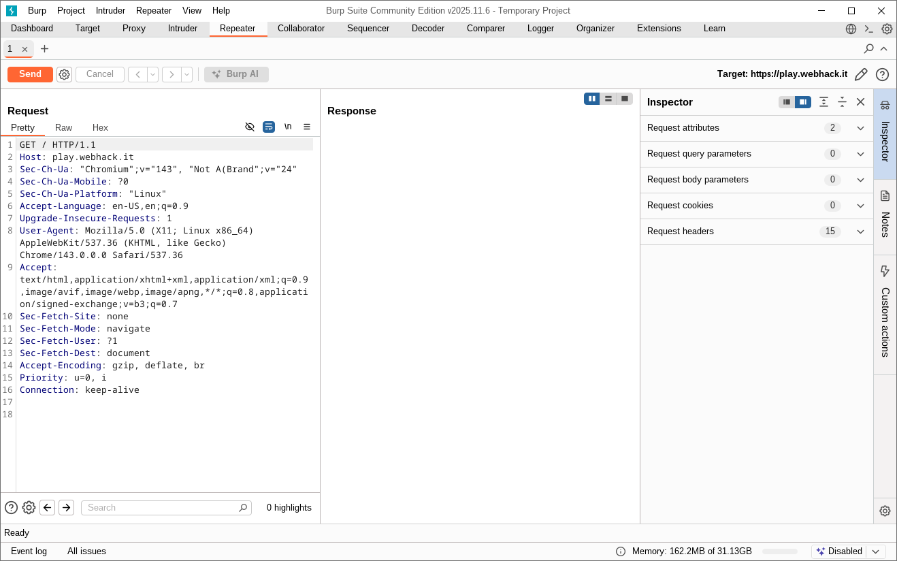</p> <br> Now we can modify the request (headers and/or the body). After we can **Send** it. </div> </div> --- <div class="content-center"> <div class="cell-center"> <p>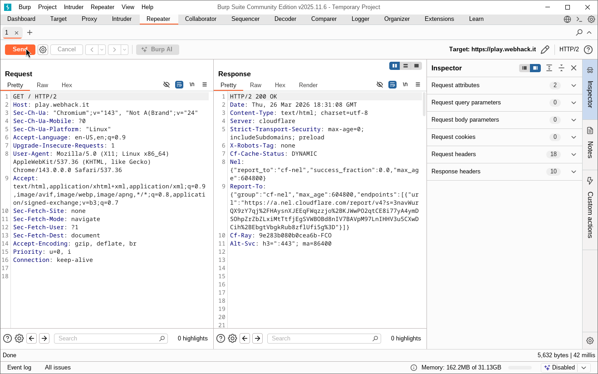</p> <br> We get back the response. We can use Render to view the rendered page. </div> </div> --- <!-- .slide: data-state="break-blue hide-controls" --> # DebugModeHackerino --- ## Reconnaissance <div class="content-center"> <p>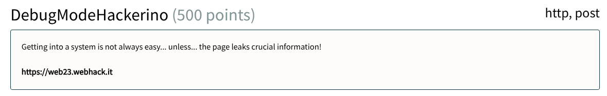</p> <br/> What can we observe? The challenge... - presents a login form with username and password - if we submit the form, we get an "ERROR: STACCAH! STACCAH!" <div class="alert alert-hint"><b>NOTE</b>: You must watch the video since it is part of history.</div> </div>